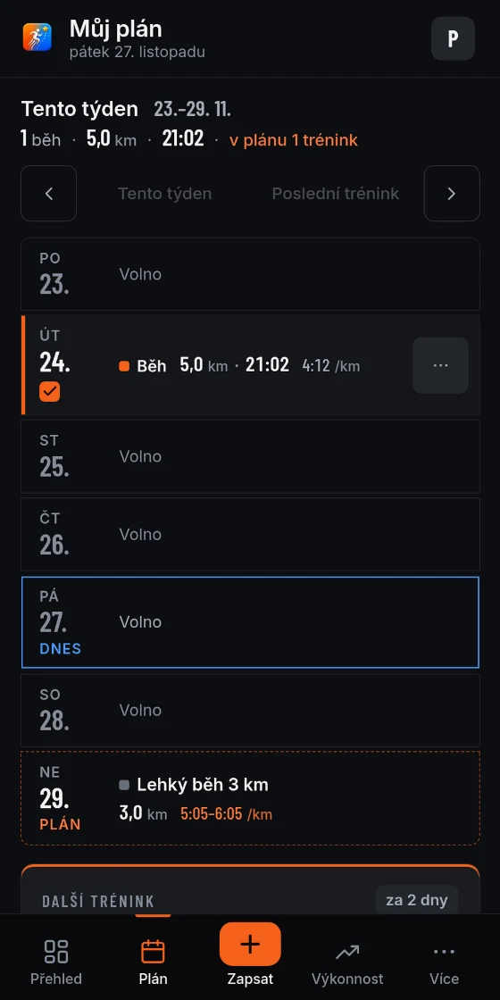
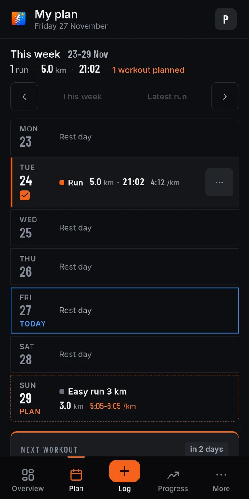
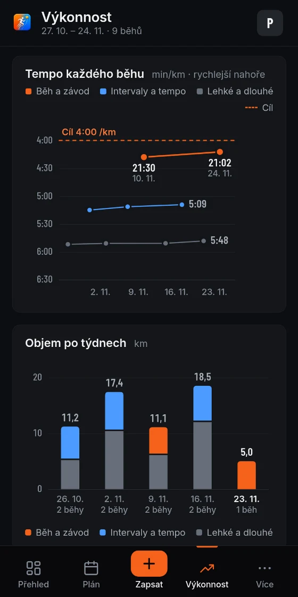
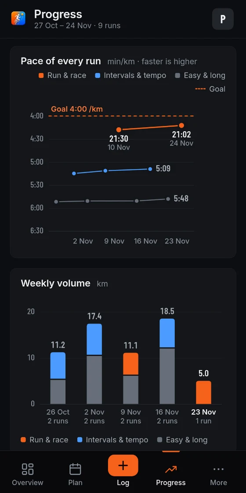
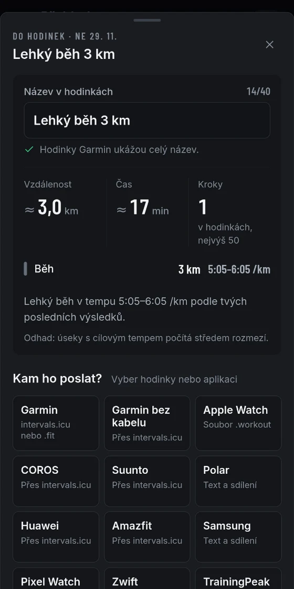
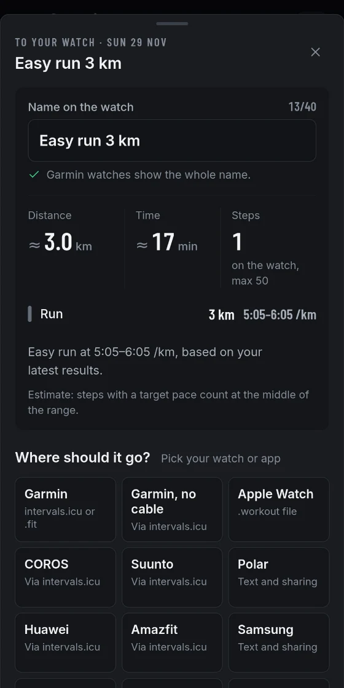
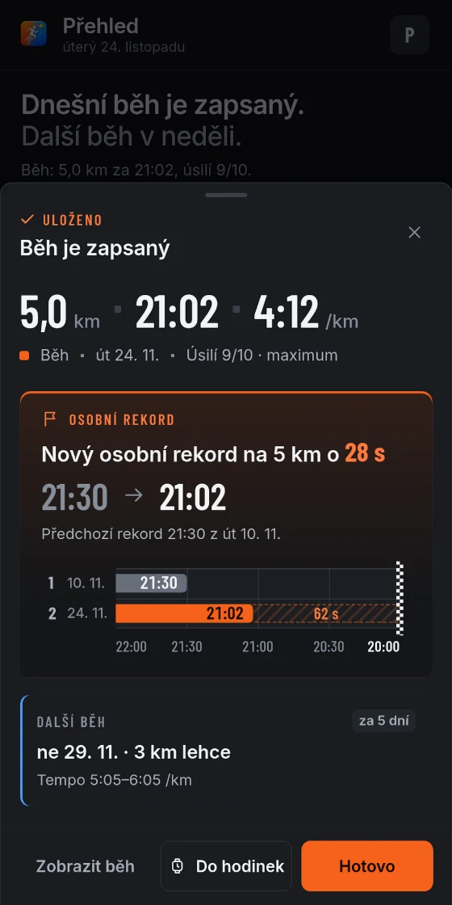
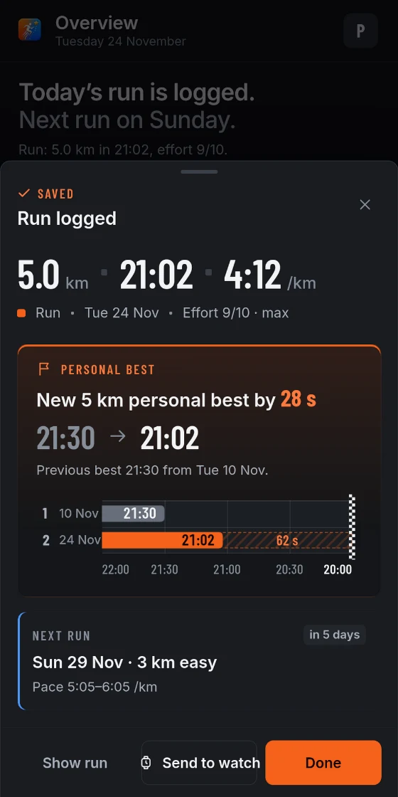

Zapíšeš běh a VEYVO spočítá tempo, ukáže, kolik ti chybí do cíle, a navrhne další trénink podle dnů, kdy můžeš běhat. Trénink pak pošleš do hodinek. Bez účtu: všechno zůstává v tvém zařízení.
Running journal and plan
A plan that starts from your own runs
Log a run and VEYVO works out your pace, shows how far you are from your goal and suggests the next session for the days you can run. Then send the workout to your watch. No account: everything stays on your device.
Dnešní doporučení, další běh s tempem a kolik ti chybí do cíle, třeba 5 km pod 20:00. Regeneraci zapíšeš třemi klepnutími.
Overview
Today's suggestion, your next run with its pace and how far you are from your goal, such as 5 km under 20:00. Log recovery in three taps.
Můj plán
Vybereš dny, kdy můžeš běhat, a VEYVO podle nich naplánuje další běh. Z knihovny přidáš intervaly, tempo nebo dlouhý běh.
My plan
Pick the days you can run and VEYVO plans your next run around them. Add intervals, tempo or a long run from the library.
Výkonnost
Tempo každého běhu, objem po týdnech, osobní rekordy a deník běhů. Všechno spočítané jen z toho, co zapíšeš.
Progress
The pace of every run, weekly volume, personal bests and your run log. All of it worked out only from what you log.
Do hodinek
Strukturovaný trénink pro hodinky Garmin, Apple Watch, COROS, Suunto, Huawei, Amazfit a další, i pro Zwift a TrainingPeaks: jako soubor, přes intervals.icu nebo jako text.
To your watch
Structured workouts for Garmin, Apple Watch, COROS, Suunto, Huawei, Amazfit and other watches, and for Zwift and TrainingPeaks: as a file, through intervals.icu or as text.
Před během
Časový plán jídla a pití, občerstvení na trasu a kontrolní seznam před odchodem. Obecné rady s odkazy na zdroje.
Before the run
A timeline for food and drink, fuel for the route and a checklist before you head out. General guidance with links to its sources.
Bez účtu a bez reklam
Žádná registrace, reklamy ani analytika. Data jsou jen v zařízení a zálohu si uložíš do souboru. Propojení s dalšími službami je volitelné.
No account, no ads
No sign-up, ads or analytics. Your data stays on your device and you save backups to a file. Links to other services are optional.
Ukázky
Skutečné obrazovky, skutečné běhy
Snímky jsou z aplikace s devíti běhy autora z listopadu 2026.
Screens
Real screens, real runs
The screenshots come from the app with nine of the developer's own runs from November 2026.


Můj plánTýden podle dnů, kdy můžeš běhat.My planA week built around the days you can run.


VýkonnostTempo a objem z tvých běhů.ProgressPace and volume from your runs.


Do hodinekVybereš hodinky, VEYVO ukáže jak.To your watchPick your watch, VEYVO shows how.


Zapsat běhOsobní rekord uvidíš hned.Log a runSee a personal best right away.
Kde ho najdeš
Android, iPhone a Windows
Where to get it
Android, iPhone and Windows
Android BrzySoon
Google Play. Funguje offline, data zůstávají v telefonu.Google Play. Works offline, your data stays on the phone.
iPhone BrzySoon
App Store. Běhy umí načíst z aplikace Zdraví (Apple Health), pokud to povolíš.App Store. It can import your runs from Apple Health if you allow it.
Windows
Instalátor i přenosná verze na GitHubu.Installer and portable version on GitHub.